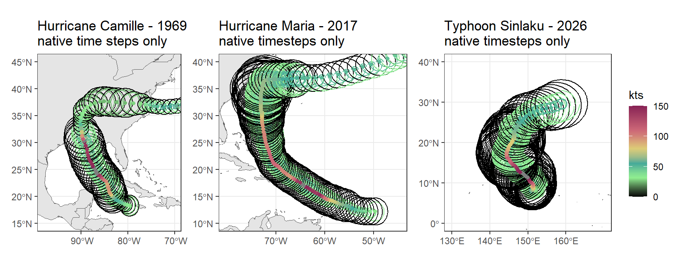
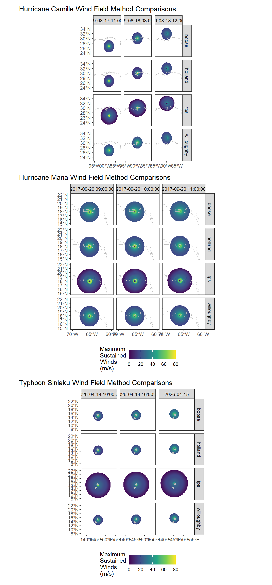
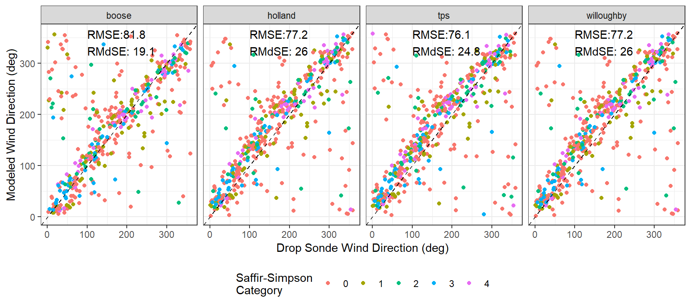
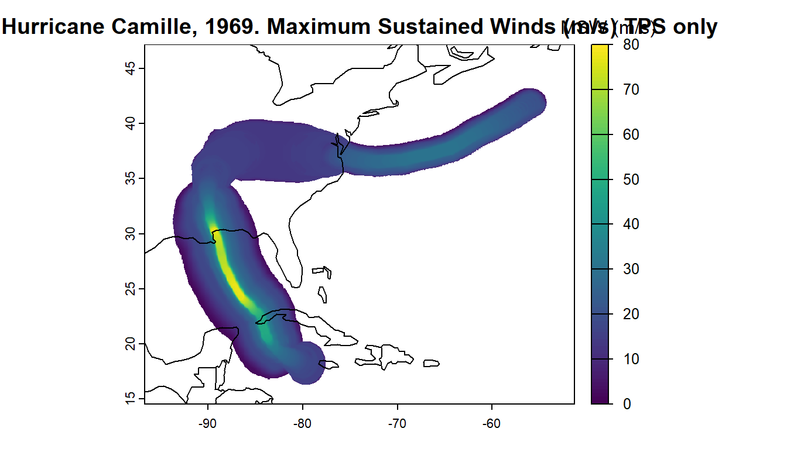
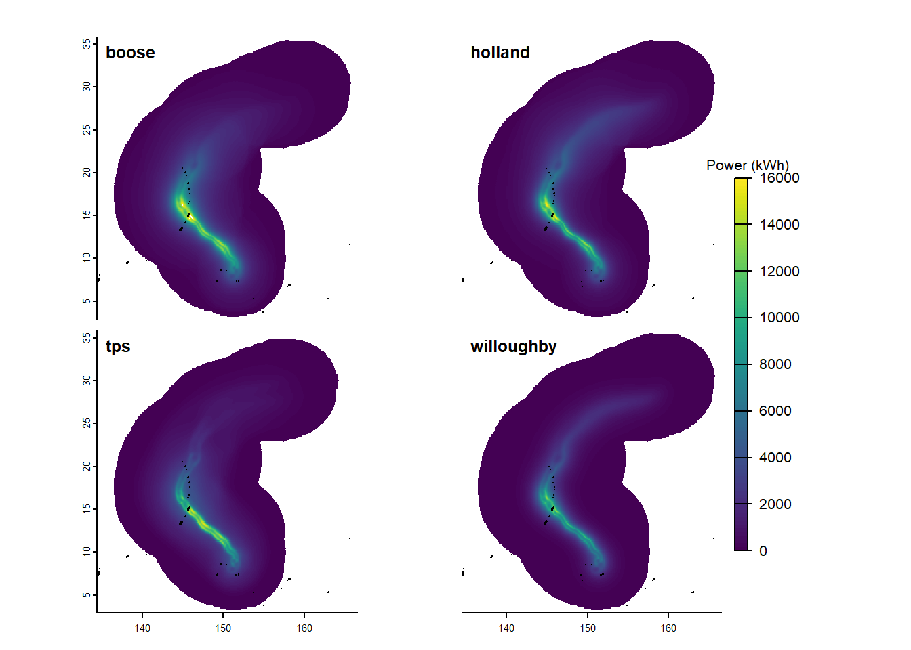
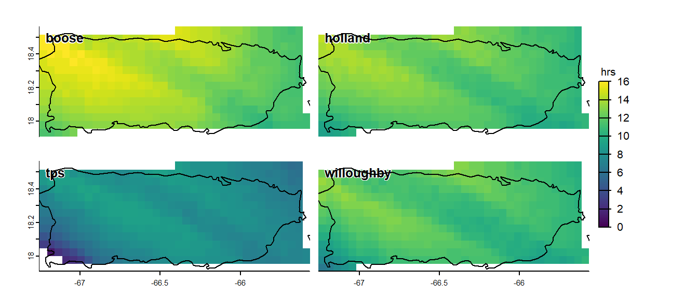

Winds
The following methods demonstrate some of the more detailed capabilities of the wind products from Cyclones. This includes:
- Modeling wind extents for storms with incomplete data
- Building high resolution wind rasters at specific timesteps
- Compare rasters with hurricane hunter reconnaissance drop sonde data
- Building aggregate rasters representative of an entire storm’s lifetime.
Wind related products are provided in a mix of both imperial (knots) and metric (m/s) units. This is somewhat by design. The baseline data for all Cyclones workflows are the tabular IBTrACS or HURDAT, both of which originate at the US National Hurricane Center, which uses imperial units. Thus, to preserve the native values, storm track products are provided in both knots and m/s. Downstream products, however switch to metric as they are already undergoing approximations and transformations.
Get Storm Tabular Data
Use the ‘get_storms()’ function to gather the available time series, location, and meteorological information for a particular storm. If a local, pre-downloaded IBTrACS .csv or .nc data source is available, it can be used, either as the file location or as a pre-loaded dataset. If not, the data will be downloaded from the web.
library(Cyclones)
## reading from a local copy
allstorms <- get_storms("./ibtracs.ALL.list.v04r01.csv")
## downloading instead, will need to increase download timeout option
# options(timeout = 400)
# allstorms <- get_storms(ib_filt="all")
## separate the storms of interest for this vignette
storms <- allstorms[grep("CAMILLE_1969|SINLAKU_2026|MARIA_2017",names(allstorms))]Because the native IBTrACS data includes input from multiple meteorological agencies across the globe, the get_storms() function will automatically consolidate values across these agencies. The United States (USA) contains the lowest number of missing values, so it is selected by default, with the World Meteorological Organization (WMO) selected as the secondary choice. If those values are missing but values from other agencies are available, they will be used instead. Alternatively, users can select another agency at their discretion. This is done via the ‘pref’ argument, which can be one of: USA, WMO, TOKYO, CMA, HKO, KMA, NEWDELHI, REUNION, BOM, NADI, WELLINGTON, DS824, TD9636, TD9635, NEUMANN, or MLC. See the IBTrACS documentation for more information.
Further, because these agencies use different definitions for the maximum sustained wind, these values can also be manipulated to ensure consistency. This is done via the ‘msw_int’ argument, which can one of: ‘10min’, ‘1min’, ‘2min’, or ‘3min’.
## getting the Japanese values but converting to 1min sustained wind intervals
allstorms_JPN1min <- get_storms("./ibtracs.ALL.list.v04r01.csv",pref='TOKYO',msw_int='1min')Get Wind Products
With the tabular data loaded, they can now be used to build wind rasters.
Build Extent Models
If linear extents of wind speeds and cyclone regions (eye, radius of last closed isobar (ROCI)) are needed, or if the Thin Plate Spline (TPS) wind method is desired, wind extent models are built into a lookup table (The empirical TPS method is shown below to sometimes be more accurate than the theoretical models). These lookup tables should be based on as full or limited a set of storms as necessary for the objective. For generalized modeling, its best to use a full set of storms (ib_filt=“all” in the above get_storms() call).
## build the models based on the entire storm dataset.
## The models are built into lookup tables,
## with a different model for every quadrant of the storm,
## for every storm size and in every basin.
mods <- build_models(allstorms)The models returned by ‘build_models()’ are nested inside a data frame. While this nesting makes passing and using the models more fluid, it complicates saving them to disk or viewing them in the browser. Thus, users should be careful when attempting to do so. Models are always grouped by oceanic basin and size (saffir-simpson scale), as well as by quadrant when applicable. There are 5 sets of models. The ‘distmods’ describe wind extent as a function of wind speed. The ‘emod’ describes the eye radius as a function of the radius of the maximum wind speed. The ‘roci’ mods describe the radius of the last closed isobar (storm’s maximum extent) as a function of the largest wind extent. The ‘poci’ mods describe the pressure difference between the inner low and the outer high as a function of the maximum wind speed. Also included is a table of the mean minimum pressure for each size storm in each basin.
![Fig 1. The results of build_models() are nested data frames containing the original storm data, along with models describing important wind and pressure extents. Predictions from these models are shown here with small random samples of the data, and are used in the make_extents() function to estimate missing extents, such as the radius of maximum wind, the eyewall radius, and the radius of the last closed isobar. Most models are only computed for category 0 and above and although the Northern Indian and Southern Atlantic are included in the models, they are not shown due to limited plotting space.](Winds_files/figure-html/plot_distmods-1.png)
Fig 1. The results of build_models() are nested data frames containing the original storm data, along with models describing important wind and pressure extents. Predictions from these models are shown here with small random samples of the data, and are used in the make_extents() function to estimate missing extents, such as the radius of maximum wind, the eyewall radius, and the radius of the last closed isobar. Most models are only computed for category 0 and above and although the Northern Indian and Southern Atlantic are included in the models, they are not shown due to limited plotting space.
Make Wind Extent Spatial Features
The above models will allow the reconstruction of certain wind and pressure extents when missing, which is often the case for older (pre 2018) storms. These are particularly useful when using the Thin Plate Spline method for wind modelling, as it allows for the creation of wind field predictions specific to each quadrant and each basin and each storm category based on the other storms in the data. If generalized, mostly symmetrical wind fields are desired, the other non-TPS methods can be used as explained further below. However those often use the radius of maximum wind (RMW), which is also often missing in older storms and can be estimated using the models from ‘build_models()’.
## generate linestring (default) and polygon (optionally) wind extent features
## for each timestep
## in each storm. When used as shown below with multiple storms as an input,
## the functions will only perform the action on the first storm
windextents <- make_extents(storms,mods=mods,type=c("linestrings","polygons"))
## which is equivalent to
windextent_1 <- make_extents(storms[[1]],mods=mods,type=c("linestrings",
"polygons"))
## To apply the function to all storms, use lapply
## Can also decrease the timestep from the 3-hour default, which will
## interpolate positions and meteorological data. Native, interpolated, and
## modeled data are indicated in the final product
windextents <- lapply(storms,make_extents, mods=mods,t_res=30)
## internal parallelization (over individual timesteps), not currently supported
## backend processing seems to bog down the relatively quick extent calculation
## parallel over multiple storms
## one node for each storm (3)
initiatepar(cpus=3,type="extents")
## sfClusterApplyLB is quicker but may jumble the order of the storms
## use sfLapply to for slightly slower but same storm order
windextents <- sfClusterApplyLB(storms,make_extents, mods=mods,t_res=30)
## be sure to close parallel workers
sfStop()
## If both linestrings and polygons were returned, they can be pulled out
linestrings <- lapply(windextents,function(x) x$linestrings)
polygons <- lapply(windextents,function(x) x$swaths)
## the individual storms are projected in their own crs, centered on the storm.
## To get them all in the same CRS, if desired
linestrings <- lapply(linestrings,st_transform,crs=4326)The spatial features returned by ‘make_extents()’ contain information pertaining to the track of the center of the storm, as well as various wind or pressure extents, all at specific time steps. Each feature also contains information pertaining to the storm as a whole, such as the maximum wind, the ROCI, etc.
Track data can be either native or interpolated, depending on the hour. Native time steps are typically given for every third hour of the day, with some exceptions for landfall events. All other hours are interpolated. For extent, there are two data points that can be either native, interpolated, or modeled. Those two data points are the location of the extent, and the value of that extent. Location can only be either native or interpolated, just as the track data. But the value of the extent can be native, interpolated, or modeled. These are indicated in the source column in the order of location, value.
The below samples from ‘make_extents()’ come from unmodeled (top) and modeled (bottom) calls. Notice the missing data in the unmodeled table and the difference in the ‘source’ column:
## Warning: Non-MODELED wind extents| kts | basin | location | source | ID | name | date | dist.m | rmw.m | maxwind.ms | minpress.mb | maxpress.mb | roci.m | centerX | centerY | geometry |
|---|---|---|---|---|---|---|---|---|---|---|---|---|---|---|---|
| NA | NA | track | interpolated | CAMILLE_1969_NA_1969226N18280 | CAMILLE | 1969-08-21 17:30:00 | 0 | NA | 30.8640 | NA | NaN | NA | -64.98460 | 37.73503 | LINESTRING (1406216 961478…. |
| NA | NA | track points | interpolated | CAMILLE_1969_NA_1969226N18280 | CAMILLE | 1969-08-15 13:00:00 | 0 | NA | 46.8104 | 968.6667 | NaN | NA | -83.86658 | 20.70003 | POINT (-299521.2 -1025734) |
| 150 | NA | NE | native | CAMILLE_1969_NA_1969226N18280 | CAMILLE | 1969-08-18 04:00:00 | 9260 | 9260 | 77.1600 | 900.0000 | NaN | NA | -89.40000 | 30.30000 | LINESTRING (-806091.1 72050… |
| 150 | NA | NW | native | CAMILLE_1969_NA_1969226N18280 | CAMILLE | 1969-08-18 04:00:00 | 9260 | 9260 | 77.1600 | 900.0000 | NaN | NA | -89.40000 | 30.30000 | LINESTRING (-815990.6 63474… |
| 150 | NA | SE | native | CAMILLE_1969_NA_1969226N18280 | CAMILLE | 1969-08-18 04:00:00 | 9260 | 9260 | 77.1600 | 900.0000 | NaN | NA | -89.40000 | 30.30000 | LINESTRING (-797557.7 62120… |
| 150 | NA | SW | native | CAMILLE_1969_NA_1969226N18280 | CAMILLE | 1969-08-18 04:00:00 | 9260 | 9260 | 77.1600 | 900.0000 | NaN | NA | -89.40000 | 30.30000 | LINESTRING (-807456.3 53543… |
## Warning: MODELED wind extents| kts | location | dist.m | source | ID | basin | name | date | maxwind.ms | rmw.m | minpress.mb | maxpress.mb | roci.m | centerX | centerY | geometry |
|---|---|---|---|---|---|---|---|---|---|---|---|---|---|---|---|
| 0 | ROCI | 150752.8 | interpolated & modeled | CAMILLE_1969_NA_1969226N18280 | NA | CAMILLE | 1969-08-14 16:00:00 | 25.2056 | 62968 | 1000.5735 | 1014.6598 | 150752.8 | -81.79992 | 18.96672 | LINESTRING (-236030.3 -1218… |
| 34 | NE | 272244.0 | native & modeled | CAMILLE_1969_NA_1969226N18280 | NA | CAMILLE | 1969-08-17 09:00:00 | 73.5592 | 22224 | 912.0000 | 1000.3798 | 401884.0 | -88.00000 | 26.50000 | LINESTRING (-681640 -95035…. |
| 64 | NW | 64820.0 | interpolated & modeled | CAMILLE_1969_NA_1969226N18280 | NA | CAMILLE | 1969-08-15 21:30:00 | 48.8680 | 37040 | 957.5417 | 1007.1183 | 366696.0 | -84.30000 | 21.80000 | LINESTRING (-406924.4 -9013… |
| 50 | SE | 124084.0 | interpolated & modeled | CAMILLE_1969_NA_1969226N18280 | NA | CAMILLE | 1969-08-17 19:00:00 | 69.9584 | 25928 | 917.0000 | 997.9987 | 392624.0 | -88.73321 | 28.40001 | LINESTRING (-633248.6 -1604… |
| 42 | SW | 81488.0 | interpolated & modeled | CAMILLE_1969_NA_1969226N18280 | NA | CAMILLE | 1969-08-20 16:30:00 | 21.6048 | 77784 | 997.5806 | 1007.4555 | 150752.8 | -75.74971 | 37.05085 | LINESTRING (471941.4 711441… |
| NA | track | 0.0 | interpolated | CAMILLE_1969_NA_1969226N18280 | NA | CAMILLE | 1969-08-21 13:30:00 | 30.8640 | 48152 | 1000.5735 | 1021.2778 | 150752.8 | -67.25170 | 37.25304 | LINESTRING (1216657 880887…. |
These spatial features can also be good for certain storm visualizations in which a fully gridded raster is unnecessary or otherwise unfit for the display objectives. In the below figures, the top panel shows the various extents for the native timesteps only of our two storms. Figure 2 better demonstrates the difference between native, interpolated, and modeled data, with the older Camille generally lacking any native data when compared to the more recent Sinlaku. Still, Sinlaku native data is missing some of the lower wind extents that would normally be included in a modern North Atlantic storm.
### an example of plotting the windextents via ggplot
countries <- rnaturalearth::ne_countries(scale="Medium",continent = c("north america","south america","Europe","Africa","Oceania"))
ggplot(windextents$CAMILLE_1969_NA_1969226N18280|>filter(grepl("native",source)))+
geom_sf(data=countries|>st_transform(st_crs(windextents[[2]])))+
geom_sf(aes(col=kts))+
geom_sf(data=windextents$CAMILLE_1969_NA_1969226N18280|>filter(!grepl("interpolated",source),location=="track points"),aes(col=maxwind.ms/0.514))+
scale_color_gradientn(
colours = c("black","lightgreen","#44AA99","#DDCC77","#CC6677","#882255"),
values = scales::rescale(c(64, 83, 96, 113,137)),
limits = c(0, 150))+
ggtitle("Hurricane Camille - 1969")+
theme_bw()+
coord_sf(crs = sf::st_crs(4326))+
scale_x_continuous(limits=c(-98,-70),n.breaks=4)+
ylim(15,45)
Fig 1. The results of make_extents() are storm tracks, as well as outer limits of various wind and pressure values. Here, only the native timesteps are shown, with a mix of native and modeled extents.
![Fig 2. Another look at the results of make_extents(), this time looking at the different sources of the data and only for hurricane force winds. Data sources are given in order of their reference to the location and the value of the feature. If t_res was utilized, interpolated features are also created to fill in the missing times. Also, the 'mods' argument can be used to model wind and pressure values that are missing, which is usually the case for older storms or sometimes for storms outside of USA jurisdiction. In this case, an older storm (Camille) has very little native information. Because we used modeling to fill in the missing extents, there are a mix of native and modeled features, as well as interpolated features between the native time steps.](Winds_files/figure-html/plot-extents2-1.png)
Fig 2. Another look at the results of make_extents(), this time looking at the different sources of the data and only for hurricane force winds. Data sources are given in order of their reference to the location and the value of the feature. If t_res was utilized, interpolated features are also created to fill in the missing times. Also, the ‘mods’ argument can be used to model wind and pressure values that are missing, which is usually the case for older storms or sometimes for storms outside of USA jurisdiction. In this case, an older storm (Camille) has very little native information. Because we used modeling to fill in the missing extents, there are a mix of native and modeled features, as well as interpolated features between the native time steps.
Build Wind Rasters
Next, we interpolate and/or model the winds across space and time, creating a more complete gridded representation that can be useful in any number of applications. This is accomplished through either one of three theoretical models, or through a more empirical Thin Plate Spline, which utilizes the above linestrings, and which in this case were generated from a set of models. Because we used models here, all methods should produce a set of rasters, in contrast to the simple method employed in the introductory vignette, which did not use models and as a result could not produce all methods for the older Camille storm.
The ‘make_winds’ function accepts a spatial resolution specification and will match the temporal resolution of the input wind extents. Although accuracy and smoothness are optimized at higher resolutions, computation times suffer. For initial testing, a spatial resolution of 20000 m and a temporal resolution of 60 mins is reasonable and default. Because terra::raster objects are saved on disc rather than memory, they can not be passed and collected as part of parallel processes. Therefore, results from get_wind and other functions are wrapped rasters in case a parallel operation is desired. They must be separated and unwrapped with a simple ‘unwrap()’ call before they can be used for most operations. All storm layers are projected onto a Lambert Azimuthal Equal Area reference system that is centered on the storm’s extent, which preserves area across large geographic regions and avoids geographic coordinate issues at the 180th meridian.
## use get_wind() to produce the wind rasters
winds <- lapply(windextents,get_wind,methods=c("all"))
names(winds)
## load files saved to disk previously, providing the directory names as saved
## in this case, if files were saved other than the working directory, provide
## that as the 'todir' argument
winds <- lapply(list(CAMILLE1969="CAMILLE1969_20000_30",SINLAKU2026="SINLAKU2026_20000_30",MARIA2017="MARIA2017_20000_30"),
todir="./Winds",get_wind)
## the layers are stored in nested lists in which individual time steps are
## nested within each storm and each method
windsCamille_tps <- winds$CAMILLE_1969_NA_1969226N18280$tps
plot(windsCamille_tps[[1:3]])
## compute only one storm at a time, utilizing internal parallel
## only optimal for higher spatial resolutions (<10km)
winds <- get_wind(windextents$CAMILLE_1969_NA_1969226N18280,methods=c("all"),
s_res=5000,cpus=15,todir="./")
####################
# parallel across multiple storms via snowfall
# best for low to medium resolution for multiple storms
####################
### one node for each storm
initiatepar(cpus=3,type="winds")
## sfClusterApplyLB is quicker but may jumble the order of the storms. It will also drop the names of the original list
## use sfLapply to for slightly slower but same storm order and maintains names
winds <- sfClusterApplyLB(windextents,get_wind,methods="all",s_res=5000)
sfStop()
names(winds) <- names(windextents)
## must unwrap when external parallel
winds <- rapply(winds,unwrap,how="list")
Fig 3. The results of get_wind() are rasters for each timestep at the desired spatial resolution (here at 5000km). This is showing windspeed, but wind direction and power disspipation are also provided. Because we modeled the wind extents before computing the wind rasters, all methods can be used. See further below a comparison of the modeled versus non modeled results.
In the introductory vignette, the same wind rasters were produced based on wind extents that were not modeled. While they maintain the uncertainty of the native data, these un-modeled extents are unable to provide much of the information necessary for TPS calculation, and in the case that they do have all of the necessary information, it is sometimes misleading. The below figure demonstrates the difference between wind rasters produced from modeled and un-modeled wind extents. For Camille, modelling allows for the computation of the other methods, which require a radius of maximum wind and an outer pressure estimate at the least. For Sinlaku, modelling helps constrain the maximum wind field.
![Fig 4. Comparing the 'modeled' and 'unmodeled' products of get_wind(). Un-modeled use only the native wind extents, while modeled were supplemented with the models produced by 'build_models()'. Older storms, such as Camille (1969) wont compute the non-TPS methods unless supplemented with non-native data. These methods that weren't able to compute for Camille, did so with modeled extents. Notice also that utilizing the extents in TPS typically results in a larger overall footprint, a reflexion of the use of the ROCI (a pressure extent), whereas the other methods only model theoretical wind extents.](Winds_files/figure-html/plotwinds2-1.png)
Fig 4. Comparing the ‘modeled’ and ‘unmodeled’ products of get_wind(). Un-modeled use only the native wind extents, while modeled were supplemented with the models produced by ‘build_models()’. Older storms, such as Camille (1969) wont compute the non-TPS methods unless supplemented with non-native data. These methods that weren’t able to compute for Camille, did so with modeled extents. Notice also that utilizing the extents in TPS typically results in a larger overall footprint, a reflexion of the use of the ROCI (a pressure extent), whereas the other methods only model theoretical wind extents.
![Fig 5. Another comparison of the rasters from get_wind() for Super Typhoon Sinlaku along with a VIIRS derived satellite image and the wind extents from make_extents(). The wind extents are directly used to calculate the TPS method, but they also offer an interesting comparison with the other methods and the visual imagery. The non-TPS methods were primarily developed for North Atlantic cyclones, which are generally half the size of Pacific cyclones and this can be seen here as the non-tps methods drastically underestimate storm size compared to the satellite imagery and the modeled extents. Notice also however, for Sinlaku, how the un-modeled TPS extents do not properly bound the eye, resulting in an inflated maximum wind area.](Winds_files/figure-html/plotwinds3-1.png)
Fig 5. Another comparison of the rasters from get_wind() for Super Typhoon Sinlaku along with a VIIRS derived satellite image and the wind extents from make_extents(). The wind extents are directly used to calculate the TPS method, but they also offer an interesting comparison with the other methods and the visual imagery. The non-TPS methods were primarily developed for North Atlantic cyclones, which are generally half the size of Pacific cyclones and this can be seen here as the non-tps methods drastically underestimate storm size compared to the satellite imagery and the modeled extents. Notice also however, for Sinlaku, how the un-modeled TPS extents do not properly bound the eye, resulting in an inflated maximum wind area.
Wind Power and Direction
In addition to wind speed, ‘get_wind()’ will also return the direction of the wind and the power exerted by the wind. Direction is mostly a simple calculation of the perpendicular angle to the azimuth to the center of the storm, with the perpendicular direction decided by the hemisphere (-90, counterclockwise in the northern hemisphere and +90, clockwise in the southern hemisphere). The Boose method, however, moderates the change in direction as a function of the distance from the center, and also employs a cross-isobar inflow angle, with is 20 degrees over water and 40 degrees over land. These basically describe how the change in wind direction slows down further away from the center, especially over land.
Wind power is a function of the wind speed, the duration of that speed, and the characteristics of the air. It is calculated as the maximum total theoretical wind on a given surface area, as described by the equation: \[P = \frac{1}{2}\rho A v^3\] where \(P\) is the power in Watts (W), \(\rho\) is the air density in \(\frac{kg}{m^3}\), \(A\) is the area of the surface in \(m^{2}\) and \(v\) is the wind velocity in \(\frac{m}{s}\). Here, we calculate the power on 1 \(m^{2}\) surface. Wind velocity of course is calculated via the requested method(s), leaving only the air density. Air density within tropical cyclones varies from lower (1.10 \(\frac{kg}{m^3}\)) near the eye wall to higher (1.17 \(\frac{kg}{m^3}\)) near the outer extent. As this difference is minimal relative to the much larger \(v^3\), it is often generalized as about 1.15 \(\frac{kg}{m^3}\). Thus, our power calculation becomes: \[P = 0.575v^3\]
However, because we also want to incorporate the duration of the winds on the surface, we multiply the power calculation by the time-step duration to get our final result in kWh. Again, this is the theoretical maximum power output on a 1\(m^2\) surface. In reality, power will be dependent on the incident angle of the object, the shape of the object, etc. Thus, this is meant solely as an indication of the wind speed and duration, which can vary considerably as storms speed up and slow down, or as they change direction.
![Fig 6. Wind direction and power are also provided by 'get_wind()'. Both variables are calculated the same across the different methods, except for Boose, which incporporates a cross-isobar inflow angle to get direction. Direction is usefull when considering wind effects across topology and can be used alongside an elevation dataset to calculate an exposure index. Power is mostly proportional to the velocity cubed and is important because it considers how long winds were present in a given area, which can also have an impact on the overall effect of the wind.](Winds_files/figure-html/plotwinds4-1.png)
Fig 6. Wind direction and power are also provided by ‘get_wind()’. Both variables are calculated the same across the different methods, except for Boose, which incporporates a cross-isobar inflow angle to get direction. Direction is usefull when considering wind effects across topology and can be used alongside an elevation dataset to calculate an exposure index. Power is mostly proportional to the velocity cubed and is important because it considers how long winds were present in a given area, which can also have an impact on the overall effect of the wind.
Compare Winds With Any Corresponding Drop Sondes
The compare_winds function will compare the computed raster data with drop sonde data from the National Hurricane Center, if available. Drop sondes are acquired from NOAA’s Hurricane Research Division. They are high accuracy gps beacons, whose trajectory and sensors provide high frequency wind information (i.e. velocity, direction). Data are available for select storms dating back to 1960. If available, data is ingested, parsed, aggregated, and saved to either a temp drive or a permanent repository, which makes processing more stable if the same storms will be reanalyzed in the future (no need to download). Once the sonde data is ready, they are cross referenced with the wind rasters and matched by location (accuracy dependent on raster resolution) and time (within 5 minutes default). Because of this, a higher temporal resolution for the rasters will result in more matches with the sonde data. Further, although drop sondes collect information along the entire vertical profile of the storm, only surface winds (<30 m in elevation) are compared here, as those are most comparable to the raster layers.
The compare_winds function will also output a list of spatial feature data frames in a geographic coordinate system, with each entry corresponding to one set of sonde measurements and the corresponding extracted raster value as well as its source file. It can be used to assess and examine the accuracy of the wind products relative to to direct measurements from the sondes.
## The wind rasters (as filenames or loaded into memory) can be compared
## against the hurricane hunter drop sonde data
## indicating the ddir will save and load the sonde data from that directory
comps <- compare_winds(rasts=windsSinlaku,ddir="./Drop Sondes/")
comps_r <- do.call(rbind,comps)
### get the value closest to the 30m "surface" elevation ceiling for each sonde
comps_r_filt <- comps_r |> group_by(sonde, storm, method,var) |>
filter(ZW.m==max(ZW.m,na.rm=TRUE)) |>
ungroup()![Fig 7. get_wind() raster products compared with drop sonde data from hurricane hunter aircraft reconnaissance missions. Sondes are dropped from high elevation and take continuous measurements as they fall to the ground. The below data represent measurements that were taken within 5 minutes of the raster times and at the maximum height below 30 meters. Generally, raster images accurately reflect the dropsonde data, although there are some major discrepencies, mostly from sondes that are near or on the eye wall where wind speeds change rapidy across the profile.](Winds_files/figure-html/compare_winds-1.png)
Fig 7. get_wind() raster products compared with drop sonde data from hurricane hunter aircraft reconnaissance missions. Sondes are dropped from high elevation and take continuous measurements as they fall to the ground. The below data represent measurements that were taken within 5 minutes of the raster times and at the maximum height below 30 meters. Generally, raster images accurately reflect the dropsonde data, although there are some major discrepencies, mostly from sondes that are near or on the eye wall where wind speeds change rapidy across the profile.
The above graphic represents the drop sonde wind speed comparisons for the raster products of about 40 storms since 2016, each at 5 km spatial resolution and 10 min temporal resolution. Although each storm will be different, overall the TPS method outperforms the other models in terms of the root mean square error (RMSE) and the Root Median Square Error, although the difference is modest. Most of the error for all methods stems from sonde locations in the eye-wall, where wind dynamics can change drastically over relatively small distances. Future comparison will also incoporate SAR wind measurements.
Below are the same comparisons for wind speed. Wind speed may be an important factor for some, especially when considering wind flow over topography and the differential impacts observed on landscapes corresponding to windward, leeward, peaks and valleys. Thus, accuracy is important. The Holland and Willoughby methods employ the same calculation, as can be seen by their identical results. Boose and TPS apply similar methods akin to a spiral tangent, however Boose makes changes depending if the storm is over land or water. In any case, the comparisons are fairly similar and its not clear if there is an objective best.

Fig 8. Comparisons with drop sonde data, similar to the presented in Fig. 7, but this time for wind direction. In this case there is no clear best option. Future work may examine the reasons for the observed deviations and attempt to employ a different method. Wind direction is an important measure for calculating exposure, wich will also be included in future versions.
Aggregate Winds
In many research cases, individual timesteps are not explicitly required, and instead only an aggregate representation of the entire storm is needed. Examples include the maximum sustained wind at any given point, or the duration of hurricane force winds. The below demonstrates this and it is important to point out that although the individual timesteps may not be desired, they are still important for the aggregate calculation. As such, their temporal resolution matters. Less frequent time steps may result in aggregate data that appears less smooth than that computed with higher frequency data.
winds_Camille <- get_wind(windextents$CAMILLE_1969_NA_1969226N18280,s_res=5000,loadrasts=TRUE)
## or with files already saved
winds_Camille <- get_wind("CAMILLE1969_5000_30_WIND",todir="I:/Cyclone Products/Wind/v3_modeled/",loadrasts=TRUE)
### take only the tps msw (maximum sustained winds) layers
## use the app() function to aggregate, in this case, take the max
Cam_tps_msw <- app(winds_Camille$tps[[grepl("msw",names(winds_Camille$tps))]],fun="max",na.rm=TRUE)
terra::plot(Cam_tps_msw,main="Hurricane Camille, 1969 - Maximum Sustained Winds (m/s)")
terra::plot(st_geometry(st_transform(rnaturalearth::ne_countries(),crs(Cam_tps_msw))),add=TRUE)
## or by the multiple methods, we add a grouping step and we 'tapp()' instead of 'app()'
Cam_msw <- rast(lapply(winds_Camille,function(x) x[[grep("msw",names(x))]]))
methods <- unlist(sapply(strsplit(names(Cam_msw),"_"),"[[",1))
Cam_msw <- terra::tapp(Cam_msw,index=methods,fun="max",na.rm=TRUE)
terra::plot(Cam_msw)
terra::plot(st_geometry(st_transform(rnaturalearth::ne_countries(),crs(Cam_msw))),add=TRUE)
## Additionally, we could take the sum of the total potential wind power
winds_Sinlaku <- get_wind("Sinlaku2026_5000_30_WIND",todir="I:/Cyclone Products/Wind/v3_modeled/",loadrasts=TRUE)
Sin_power <- rast(lapply(winds_Sinlaku,function(x) x[[grep("power",names(x))]]))
methods <- unlist(sapply(strsplit(names(Sin_power),"_"),"[[",1))
Sin_power <- terra::tapp(Sin_power,index=methods,fun="sum",na.rm=TRUE)
terra::plot(Sin_power)
terra::plot(st_geometry(st_transform(rnaturalearth::ne_countries(),crs(Sin_power))),add=TRUE)
### We could also seek the duration of hurricane force winds
### For now, this is a custom function but future methods will include dedicated methods
### such as 'aggregate_winds()'
winds_Maria <- get_wind("Maria2017_5000_30_WIND",todir="I:/Cyclone Products/Wind/v3_modeled/",loadrasts=TRUE)
### get this wind speeds
## also, crop to Puerto Rico
Mar_msw <- lapply(winds_Maria ,function(x) crop(x[[grep("msw",names(x))]],st_transform(rnaturalearth::ne_countries(country="puerto rico"),crs(x))))
## remove empty layers (storm outside of Puerto Rico)
Mar_msw <- lapply(Mar_msw,function(x) x[[terra::global(x, fun = "notNA")!=0]])
### we need to know the timestep, 0.5 hrs
dt <- unique(lapply(Mar_msw,function(x) unique(difftime(time(x),lag(time(x)),units="hours"))))
### remove layers that never reach hurricane force winds
Mar_msw <- lapply(Mar_msw,function(x) x[[minmax(x)[2, ]>=33]])
### reset the msw values less than Cat 1 hurricane speed (33 m/s) to NA and the other to the time step
Mar_dur <- lapply(Mar_msw,classify,matrix(c(0,33,NA,33,Inf,0.5),ncol=3,byrow=TRUE), include.lowest=TRUE)
## major hurricanes are + 50m/s
#Mar_durMaj <- lapply(Mar_msw,classify,matrix(c(0,50,NA,50,Inf,0.5),ncol=3,byrow=TRUE), include.lowest=TRUE)
methods <- unlist(sapply(strsplit(names(rast(Mar_dur)),"_"),"[[",1))
Mar_dur <- terra::tapp(rast(Mar_dur),index=methods,fun="sum",na.rm=TRUE)
#Mar_durMaj <- terra::tapp(rast(Mar_durMaj),index=methods,fun="sum",na.rm=TRUE)
PR <- st_geometry(st_transform(rnaturalearth::ne_countries(countr="puerto rico",scale=10),crs(Mar_dur)))
wrap_plots(~terra::plot(Sin_power))/wrap_plots(~terra::plot(Mar_dur,fun=function() lines(vect(PR))))


Fig 9. Aggregating the individual time step layers from get_wind() produces a whole-storm perspective. In this case, the maximum wind (top) as well as the total power (middle) and the duration of hurricane force winds (bottom). Aggregating can be done in many complicated ways and a dedicated agg_winds() function is forthcoming.